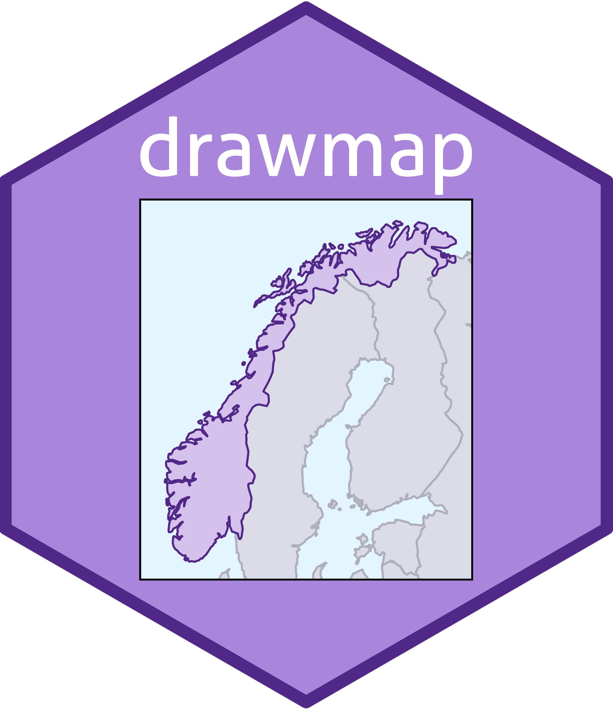

Harmonise variables for subsequent merging of
Source:
Harmonise variables for subsequent merging of sf objects
Source: R/harmonise_vars.R
harmonise_vars.Rdharmonise_vars(): Harmonise variables in an sf object for
subsequent merging with other sf object(-s) with compatible variable
names. This could be relevant for example when working with GADM map data and
merging with map data from other sources.
Usage
harmonise_vars(
data,
rename_list = NULL,
new_var = NULL,
new_val = NULL,
position = "after",
mutate_col = NULL,
mutate_suffix = NULL,
replace_var = NULL,
replace_val = NULL
)Arguments
- data
An
sfobject- rename_list
A named list of variables to rename
- new_var
A new variable to create
- new_val
A value for the new variable
- position
Position of the new variable
- mutate_col
A variable to mutate
- mutate_suffix
A suffix to add to the mutated variable
- replace_var
A variable to replace
- replace_val
A value with which to replace the variable